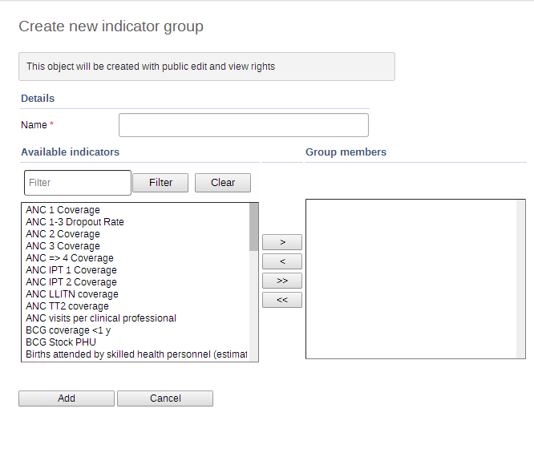

|  |
![[Note]](resources/images/admon/note.png) | Note |
|---|---|
Similar to data element and indicator group sets, typically, indicator groups should be exclusive, meaning that one indicator group should not belong to multiple indicator group sets. |
Indicator group sets create combined groups of similar indicators. For example, you might have a group of indicators called "Malaria" and "Leishmaniasis". Both of these groups could be combined into a group set called "Vector-borne diseases". Indicator groups sets are used during analysis of data to combine similar themes of indicators.
Click Apps > Maintenance > Indicators > Indicator group.
Click the yellow plus button.
Fill in the form:
Name
Description
Compulsory
Select indicator groups and assign them.
Available indicator groups are displayed in the left panel. Indicator groups that are currently members of the indicator group set are displayed in the right hand panel.
Click Save.